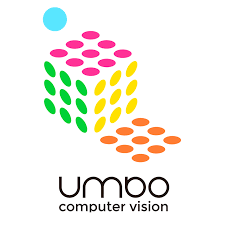
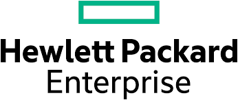
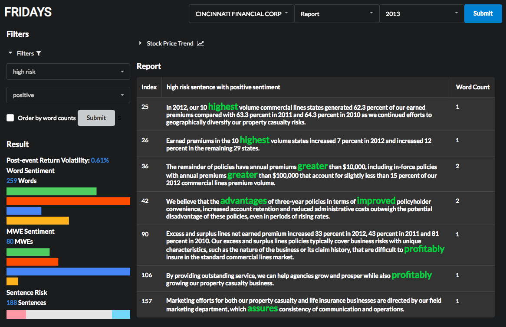
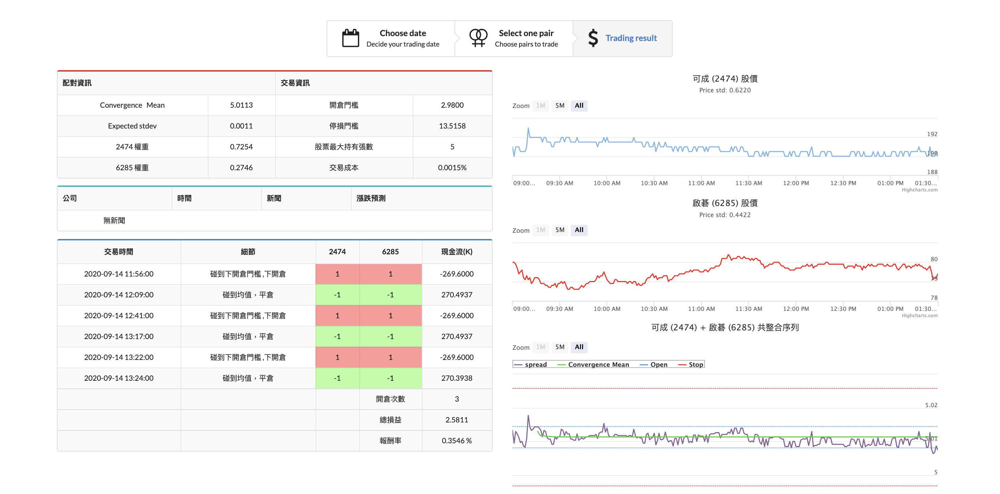

Quentin Tsai (蔡坤哲)
|
|
Quentin was born in Taiwan and grew up in a versatile Family. His father is a financial consultant, while his mother establishes a cram school and teaches English. Having background in both finance and literature field, Quentin developed a curios mind with regards to critical thinking.
Now, Quentin has received his bachelor degree in Department of Computer Science at NCTU and now pursuing master degree in Cybersecurity Program at NCTU.
Besides the major Computer Science, Quentin has shown early interest in finance and has taken many finance courses such as Investment, Financial Engineering, Financial Information System Design.
In 2018, he joined CFDA Lab (Computational Finance and Data Analytics Laboratory) at Academic Sinica as a summer intern. During his internship, he helped build a financial report analyzing system aiming at tagging effective entities of sentence by structure prediction. The system was later written as a Demo Paper and accepted by AAAI 2019 with high scores from the reviewers.
During Quentin’s junior year at college, he joined Financial Engineering Laboratory as a research assistant. His responsibilities included collaborating with finance-majored students to build a trading strategy recommendation system, website UI design, parallel computing.
With these experiences, Quentin gained the knowledge of text mining, finance computing and most importantly, the ability of multidisciplinary collaboration.
To prepare himself for a career in software industry, Quentin joined Umbo Computer Vision as a QA engineer intern and fmailiarized himself with software testing and website frontend programming. After finishing the internship at Umbo Computer Vision, Quentin earned an opportunity to work at Hewlett Packard Enterprise as a software engineer intern under the Gloabl Supply Chain Producet Integration Team.
During the internship, he built a QA testing recoded tracking system and speed up the process of team members' daily routine.
Before Quentin enters the graduate school, he joined Getac as a AI Computer Vision Engineer Summer Intern. He built a CV model that can be used to identifed Car and License Plate Number.
Further more, he Integrated the CV model with OpenVINO, Gstreamer and developed the ALPR prototype in C++ so that the CV model can be used in real-time system.
With the working experience at start-up and big company, Quentin learned how to communicate and work with other. He has also shown that he is a multi-talented student.
Now Quentin is pursuing his master degree with his interest focus on System Secuity and Cyber Security. He joins SENSE lab as a research student advised by Prof. Yu-Sung Wu
|
|

Software QA Intern
Feb. - Jul. 2019
|

Software Engineer Intern
Jul. 2019- Jun. 2020
|
AI Computer Vision Intern
Jul. - Aug. 2020
|

- CFDA & CLIP Labs -
Summer Research Intern
Jul. - Sept. 2018
|

- Financial Engineering Lab -
Part-time Research Assistant
Aug. 2018 - Now
|
- SENSE Labs -
Graduate Student
Sept. 2020 - Now
|
News
- [09/2020] Start being a graduate student at SENSE Lab.
- [07/2020] Start working as a AI CV Intern at Getac.
- [07/2019] Start working as a Software Engineer Intern at HPE.
- [02/2019] Start working as a Software QA Intern at Umbo Computer Vision.
- [10/2019] One paper accepted at AAAI'19.
- [08/2018] Start working as a part-time research assistant advised by Prof. Dai, Tian-Shyr.
- [07/2019] Start working as a Summer Research Intern at Academia Sinica advised by Prof. Chuan-Ju Wang.
|
|

|
FRIDAYS: A Financial Risk Information Detecting and Analyzing System
Chi-Han Du, Yi-Shyuan Chiang, Kun-Che Tsai , Liang-Chih Liu, Ming-Feng Tsai, and Chuan-Ju Wang.
AAAI 2019 (Demo Poster Session)
Ａbstract
Video
Demo
We present FRIDAYS, a financial risk information detecting
and analyzing system that enables financial professionals to
efficiently comprehend financial reports in terms of risk and
domain-specific sentiment cues. Our system is designed to
integrate multiple NLP models trained on financial reports
but on different levels (i.e., word, multi-word, and sentence
levels) and to illustrate the prediction results generated by the
models. The system is available online at https://cfda.csie.org/
FRIDAYS/.
|
|

|
Taiwan Stock market Pair Trading System
This real-time trading system presents a market neutral trading strategy - Pair Trading, whcih
utilize the techniques like : Time Series Analysis, Text Mining, Parallel Computing, Deep Learning.
Sponsored by 科技部數位經濟計畫, Directed by Prof. Dai, Tian-Shyr
|
|
{kind=link}